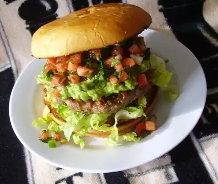

Mexican Burguer
Description
These hamburguesas Mexicanas (Mexican hamburgers) are the best you'll ever have!
Ingredients
- 3 pounds ground beef
- 1 head iceberg lettuce, cored and shredded
- 3 onions, minced, divided
- 1 pound shredded pepper Jack cheese
- 1 ½ cups bread crumbs
- 4 eggs
- 2 tomatoes, chopped and juices strained
- 2 bunches cilantro, chopped
- 3 limes, juiced, divided
- 1 serrano chile pepper, minced, divided
- 5 avocados, peeled and pitted
- salt and ground black pepper to taste
- 12 hamburger buns
How to make a mexican burguer step-by-step
- Combine ground beef, 1/2 onions, pepper Jack cheese, bread crumbs, and eggs in a bowl; form into 12 patties.
- Combine tomatoes, 1/2 remaining onion, cilantro, 1/2 lime juice, and 1/2 serrano pepper in a bowl; stir pico de gallo well. Cover and refrigerate to chill.
- Mash avocados, remaining onions, remaining lime juice, and remaining serrano pepper together in a bowl; season guacamole with salt and black pepper.
- Heat a skillet over medium-high heat. Add patties; cook to desired doneness, 3 to 5 minutes per side. An instant-read thermometer inserted into centers should read 160 degrees F (70 degrees C).
- Place 1 burger on each bun; top with guacamole, shredded lettuce, and pico de gallo.